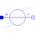

RampVoltageRamp voltage source |

|
Diagram

Information
This information is part of the Modelica Standard Library maintained by the Modelica Association.
This voltage source uses the corresponding signal source of the Modelica.Blocks.Sources package. Care for the meaning of the parameters in the Blocks package. Furthermore, an offset parameter is introduced, which is added to the value calculated by the blocks source. The startTime parameter allows to shift the blocks source behavior on the time axis.

Parameters (4)
Connectors (2)
| p |
Type: PositivePin Description: Positive electrical pin |
|
|---|---|---|
| n |
Type: NegativePin Description: Negative electrical pin |
Components (1)
| signalSource |
Type: Ramp |
|---|
Used in Examples (7)
|
Modelica.Electrical.Analog.Examples Simple NPN transistor amplifier circuit |
|
|
Modelica.Electrical.Analog.Examples Heating MOS Inverter |
|
|
Modelica.Electrical.Analog.Examples Heating NPN NOR Gate |
|
|
Modelica.Electrical.Analog.Examples Heating PNP NOR Gate |
|
|
Modelica.Electrical.Analog.Examples CMOS NAND Gate (see Tietze/Schenk, page 157) |
|
|
Modelica.Electrical.Machines.Examples.SynchronousMachines Test example: ElectricalExcitedSynchronousMachine starting direct on line |
|
|
Modelica.Magnetic.FundamentalWave.Examples.BasicMachines.SynchronousMachines ElectricalExcitedSynchronousMachine starting direct on line |